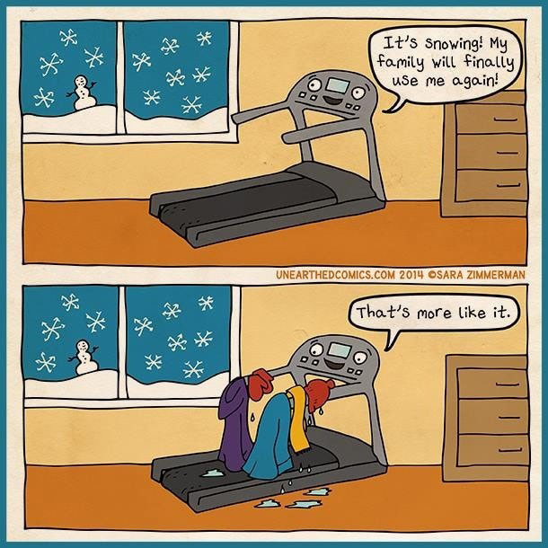

Dnevnik jednog lenjivca: Top izgovori za odustajanje od vežbanja ☺
Ukoliko imate poteškoća da se izborite sa inertnim načinom života, zapitajte se koje izgovore i opravdanja koristite. Šta vas koči da započnete ili istrajete u vežbanju? Šta je to što sebi govorite, a što obično dovede do toga da odugovlačite i odustanete od prilike da budete aktivniji nego inače? Dr Edmund Born (2005) predlaže da uradite sledeću vežbu. Napravite spisak prilika za vežbanje koje niste iskoristili, obavite iskren razgovor sa sobom na temu razloga zbog kojih ste izbegli vežbanje i smislite kako ćete da nagovorite sebe sledeći put. Možda primeri u nastavku teksta mogu da vam pomognu.

Prijateljica vas je pozvala da iskoristite Dane otvorenih vrata u obližnjem fitnes centru i besplatno probate treninge? Ako ste pomislili kako ste totalno van kondicije, grozno vam stoje helanke i pri tome ste osoba koja ne voli da menja planove, čak ni ako bi novi plan za predstojeći vikend bio mnogo bolji, možda biste trebali da razmotrite drugačiju strategiju za sledeći put – kupite širu, udobniju odeću koja neće ocrtavati sve što želite da sakrijete; usredsredite se na sopstveni tempo i dozvolite sebi da usporite, pauzirate ili napustite trening pre drugih, a pri tome zanemarite da li vas neko posmatra (Zar stvarno mislite da su svi ostali u super formi? I verovatno nisu sve oči uprte u vas jer postoje ljudi koji zaista dođu da vežbaju!); budite fleksibilniji u razmišljanju i rado prihvatite nove prilike i ponude umesto da se kruto držite „plana“ bez racionalnog objašnjenja zašto.
☺
Šetnja do posla? Ako ste odvratili sebe razmišljajući kako vam je kuća suviše udaljena od posla, kako ne možete da hodate u štiklama, a kodeks oblačenja na poslu nalaže da ih nosite, te da u godini ima previše hladnih i kišnih dana za šetnju dalju od najbliže trafike, možda bi trebalo da postavite sebi sledeća pitanja: Da li bi bilo previše da idem peške samo u jednom pravcu ako nemam vremena ili kondicije za oba? Da li mogu da kupim obuću za šetnju, pa da se prezujem na poslu? Da li imam kišobran, kabanicu ili nepromočive čizme za dane kad nije idealnih 25 stepeni?
☺
Kada se javi otpor prema vežbanju ili izgubi motivacija da se nastavi sa vežbanjem, često pribegavamo nekakvim navodnim razlozima da opravdamo svoje ponašanje. Ovo je ljudski i dešava se mnogima bar s vremena na vreme, ali činjenica je da ako ne promenimo negativan unutrašnji govor i ne pronađemo pozitivne razloge za vežbanje, izgovori nas neće dovesti u fit formu niti do željenje figure. Dakle, koji su najčešći?
Nemam vremena davežbam. Ono što u stvari hoćete da kažete je da se vežbanje ne nalazi na vašoj listi prioriteta i da niste spremni da napravite ili odvojite vreme za treninge. Ne pridajete dovoljno značaja pozitivnim aspektima vežbanja, kao ni svom zdravlju. Izračunajte koliko vremena u toku dana provedete na društvenim mrežama, dopisujući se, čitajući nevažne vesti ili gledajući TV. Možda biste sa nekim od prijatelja mogli da se družite i proćaskate u brzoj šetnji umesto na kafi!
Prekasno je da počnem da vežbam. Nije to za moje godine. Godine nikada nisu problem osim ako postoji zdravstveni razlog da ne vežbate. Moguće je postići odličnu formu u bilo kojem životnom dobu. Mnogi trkači maratona i bodibilderi su počeli da treniraju u svojim četrdesetim, pedesetim i šezdesetim godinama.
Suviše sam gojazan i/ili van forme. Ukoliko se radi o gojaznosti većeg stepena, konsultujte svog lekara i uz pomoć njega i personalnog trenera napravite program vežbanja. Možete krenuti od lakših i bezbednijih aktivnosti kao što su šetnja ili plivanje. Ako ste strpljivi, uporni i dosledni, nemoguće je da rezultati izostanu.
Osećam se previše umorno da bih vežbao/la. Rešenje može da bude u tome da vežbate pre odlaska na posao ili na pauzi u toku radnog vremena. Mnogi ljudi vežbaju uprkos umoru jer vežbanje zapravo otklanja umor, osvežava i povećava nivo energije u toku dana. Možda je u pitanju samo početna inertnost koju treba da prevaziđete.
Probao/la sam jednom i nije išlo. Pitanje koje ovde treba da postavite glasi zbog čega nije išlo. Možda ste krenuli previše intenzivno iz želje da što pre omršavite ili dovedete telo u formu? Možda su vam dosadile konstantne upale mišića koje se često javljaju na početku? Možda niste znali kako da počnete, a ustručavali ste se da zatražite pomoć trenera? Ili vam se nije dopalo osoblje fitnes centra koji ste izabrali? Možda bi vam vežbanje bilo interesantnije u društvu?
Vežbanje je dosadno i naporno. Ne volim da vežbam. Da li je moguće da su sve sportske aktivnosti kojih možete da se setite dosadne? Da li ste ih sve isprobali? Možete da eksperimentišete i isprobavate dok ne naiđete na nešto što će vam biti zabavno i primamljivo. Ili možete da kombinujute dve fizičke aktivnosti, na primer teretanu i ples, kako biste održali motivaciju.
Išao/la bih, ali nemam društvo. Iskoristite grupne fitnes programe i kolektivne sportove kao priliku da upoznate nove ljude i proširite svoju društvenu mrežu. Predstavite se treneru ili prvom vežbaču do sebe. Oni dele vaše interesovanje za rekreaciju. Vežbanje u grupi deluje motivišuće, pogotovo kada vam nedostaje unutrašnja motivacija.
Autor: Svetlana Slepčev
Reference
Bourne, Edmund J. (2005): The Anxiety & Phobia Workbook. Oakland: New Harbinger Publications (Born, Edmund: Priručnik za prevazilaženje anksioznosti i fobija. Novi Sad: Magona, 2008).